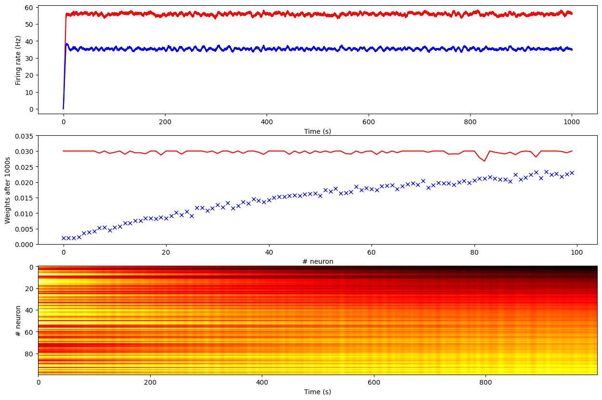

#!pip install ANNarchyHomeostatic STDP


This example is a reimplementation of the mechanism described in:
Carlson, K.D.; Richert, M.; Dutt, N.; Krichmar, J.L., “Biologically plausible models of homeostasis and STDP: Stability and learning in spiking neural networks,” in Neural Networks (IJCNN), The 2013 International Joint Conference on , vol., no., pp.1-8, 4-9 Aug. 2013. doi: 10.1109/IJCNN.2013.6706961
It is based on the corresponding Carlsim tutorial:
http://www.socsci.uci.edu/~jkrichma/CARLsim/doc/tut3_plasticity.html
This notebook focuses on the simple “Ramp” experiment, but the principle is similar for the self-organizing receptive fields (SORF) in the next notebook.
import numpy as np
import ANNarchy as annANNarchy 5.0 (5.0.0) on darwin (posix).The network uses regular-spiking Izhikevich neurons (see the Izhikevich notebook), but using exponentially-decaying conductances and NMDA synapses:
RSNeuron = ann.Neuron(
parameters = dict(
a = 0.02,
b = 0.2,
c = -65.,
d = 8.,
tau_ampa = 5.,
tau_nmda = 150.,
vrev = 0.0,
),
equations = [
# Inputs
ann.Variable('I = g_ampa * (vrev - v) + g_nmda * nmda(v, -80.0, 60.0) * (vrev -v)'),
# Membrane potential and recovery variable are solved using the midpoint method for stability
ann.Variable('dv/dt = (0.04 * v + 5.0) * v + 140.0 - u + I', init=-65., method='midpoint'),
ann.Variable('du/dt = a * (b*v - u)', init=-13., method='midpoint'),
# AMPA and NMDA conductances
ann.Variable('tau_ampa * dg_ampa/dt = -g_ampa', method='exponential'),
ann.Variable('tau_nmda * dg_nmda/dt = -g_nmda', method='exponential'),
],
spike = "v >= 30.",
reset = [
"v = c",
"u += d",
],
functions = """
nmda(v, t, s) = ((v-t)/(s))^2 / (1.0 + ((v-t)/(s))^2)
"""
)The main particularity about NMDA synaptic models is that a single synaptic connection influences two conductances:
- The AMPA conductance, which primarily drives the post-synaptic neuron:
I_\text{AMPA} = g_\text{AMPA} \times (V_\text{rev} - V)
- The NMDA conductance, which is non-linearly dependent on the membrane potential:
I_\text{NMDA} = g_\text{NMDA} \times \frac{(\frac{V - V_\text{NMDA}}{\sigma})^2}{1 + (\frac{V - V_\text{NMDA}}{\sigma})^2} \times (V_\text{rev} - V)
In short, the NMDA conductance only increases if the post-synaptic neuron is already depolarized.
The nmda function is defined in the functions argument for readability. The parameters V_\text{NMDA} =-80 \text{mV} and \sigma = 60 \text{mV} are here hardcoded in the equation, but they could be defined as global parameters.
The AMPA and NMDA conductances are exponentially decreasing with different time constants:
\tau_\text{AMPA} \frac{dg_\text{AMPA}(t)}{dt} + g_\text{AMPA}(t) = 0 \tau_\text{NMDA} \frac{dg_\text{NMDA}(t)}{dt} + g_\text{NMDA}(t) = 0
Another thing to notice in this neuron model is that the differential equations for the membrane potential and recovery variable are solved concurrently using the midpoint numerical method for stability: the semi-implicit method initially proposed by Izhikevich would fail.
net = ann.Network()The input of the network is a population of 100 Poisson neurons, whose firing rate vary linearly from 0.2 to 20 Hz:
# Input population
inp = net.create(ann.PoissonPopulation(100, rates=np.linspace(0.2, 20., 100)))We will consider two RS neurons, one learning inputs from the Poisson population using the regular STDP, the other learning using the proposed homeostatic STDP:
# RS neuron without homeostatic mechanism
pop1 = net.create(ann.Population(1, RSNeuron))
# RS neuron with homeostatic mechanism
pop2 = net.create(ann.Population(1, RSNeuron))The regular STDP used in the article is a nearest-neighbour variant, which integrates LTP and LTD traces triggered after each pre- or post-synaptic spikes, respectively.
Contrary to the STDP synapse provided by ANNarchy, weight changes occur at each each time step:
- In a post-pre interval, weight changes follow the LTP trace,
- In a pre-post interval, weight changes follow the LTD trace.
The weights are clipped between 0 and w_\text{max}.
nearest_neighbour_stdp = ann.Synapse(
parameters = dict(
tau_plus = 20.,
tau_minus = 60.,
A_plus = 0.0002,
A_minus = 0.000066,
w_max = 0.03,
),
equations = [
# Traces
ann.Variable('tau_plus * dltp/dt = -ltp', method='exponential'),
ann.Variable('tau_minus * dltd/dt = -ltd', method='exponential'),
# Nearest-neighbour
ann.Variable('w += if t_post >= t_pre: ltp else: - ltd', min=0.0, max='w_max')
],
pre_spike = [
'g_target += w',
'ltp = A_plus',
],
post_spike="""
ltd = A_minus
"""
)The homeostatic STDP rule proposed by Carlson et al. is more complex. It has a regular STDP part (the nearest-neighbour variant above) and a homeostatic regularization part, ensuring that the post-synaptic firing rate R does not exceed a target firing rate R_\text{target} = 35 Hz.
The firing rate of a spiking neuron can be automatically computed by ANNarchy (see later). It is then accessible as the variable r of the neuron (as if it were a regular rate-coded neuron).
The homeostatic STDP rule is defined by:
\Delta w = K \, (\alpha \, (1 - \frac{R}{R_\text{target}}) \, w + \beta \, \text{stdp} )
where stdp is the regular STDP weight change, and K is a firing rate-dependent learning rate:
K = \frac{R}{ T \, (1 + |1 - \gamma \, \frac{R}{R_\text{target}}|})
with T being the window over which the mean firing rate is computed (5 seconds) and \alpha, \beta, \gamma are parameters.
homeo_stdp = ann.Synapse(
parameters=dict(
# STDP
tau_plus = 20.,
tau_minus = 60.,
A_plus = 0.0002,
A_minus = 0.000066,
w_min = 0.0,
w_max = 0.03,
# Homeostatic regulation
alpha = 0.1,
beta = 1.0,
gamma = 50.,
Rtarget = 35.,
T = 5000.,
),
equations = [
# Traces
ann.Variable('tau_plus * dltp/dt = -ltp', method='exponential'),
ann.Variable('tau_minus * dltd/dt = -ltd', method='exponential'),
# Homeostatic values
ann.Variable('R = post.r', locality = 'semiglobal'),
ann.Variable('K = R/(T * (1. + fabs(1. - R / Rtarget) * gamma))', locality = 'semiglobal'),
# Nearest-neighbour
ann.Variable('stdp = if t_post >= t_pre: ltp else: - ltd'),
ann.Variable('w += (alpha * w * (1- R/Rtarget) + beta * stdp ) * K', min='w_min', max='w_max'),
],
pre_spike = [
'g_target += w',
'ltp = A_plus',
],
post_spike="""
ltd = A_minus
"""
)This rule necessitates that the post-synaptic neurons compute their average firing rate over a 5 seconds window. This has to be explicitely enabled, as it would be computationally too expensive to allow it by default:
pop1.compute_firing_rate(5000.)
pop2.compute_firing_rate(5000.)We can now fully connect the input population to the two neurons with random weights:
# Projection without homeostatic mechanism
proj1 = net.connect(inp, pop1, ['ampa', 'nmda'], synapse=nearest_neighbour_stdp)
proj1.all_to_all(ann.Uniform(0.01, 0.03))
# Projection with homeostatic mechanism
proj2 = net.connect(inp, pop2, ['ampa', 'nmda'], synapse=homeo_stdp)
proj2.all_to_all(weights=ann.Uniform(0.01, 0.03))<ANNarchy.core.Projection.Projection at 0x1567e87a0>Note that the same weights will target both AMPA and NMDA conductances in the post-synaptic neurons. By default, the argument target of Projection should be a string, but you can also pass a list of strings to reach several conductances with the same weights.
We can now compile and simulate for 1000 seconds while recording the relevat information:
net.compile()Compiling network 1... OK # Record
m1 = net.monitor(pop1, 'r')
m2 = net.monitor(pop2, 'r')
m3 = net.monitor(proj1[0], 'w', period=1000.)
m4 = net.monitor(proj2[0], 'w', period=1000.)
# Simulate
T = 1000 # 1000s
net.simulate(T*1000., True)
# Get the data
data1 = m1.get('r')
data2 = m2.get('r')
data3 = m3.get('w')
data4 = m4.get('w')
print('Mean Firing Rate without homeostasis:', np.mean(data1[:, 0]))
print('Mean Firing Rate with homeostasis:', np.mean(data2[:, 0]))Simulating 1000.0 seconds of the network 1 took 1.4701051712036133 seconds.
Mean Firing Rate without homeostasis: 55.676368399999994
Mean Firing Rate with homeostasis: 35.23116840000001import matplotlib.pyplot as plt
plt.figure(figsize=(15, 10))
plt.subplot(311)
plt.plot(np.linspace(0, T, len(data1[:, 0])), data1[:, 0], 'r-', label="Without homeostasis")
plt.plot(np.linspace(0, T, len(data2[:, 0])), data2[:, 0], 'b-', label="With homeostasis")
plt.xlabel('Time (s)')
plt.ylabel('Firing rate (Hz)')
plt.subplot(312)
plt.plot(data3[-1, :], 'r-')
plt.plot(data4[-1, :], 'bx')
axes = plt.gca()
axes.set_ylim([0., 0.035])
plt.xlabel('# neuron')
plt.ylabel('Weights after 1000s')
plt.subplot(313)
plt.imshow(np.array(data4, dtype='float').T, aspect='auto', cmap='hot')
plt.xlabel('Time (s)')
plt.ylabel('# neuron')
plt.show()
We see that without homeostasis, the post-synaptic neuron reaches quickly a firing of 55 Hz, with all weights saturating at their maximum value 0.03. This is true even for inputs as low as 0.2Hz.
Meanwhile, with homeostasis, the post-synaptic neuron gets a firing rate of 35 Hz (its desired value), and the weights from the input population are proportional to the underlying activity.